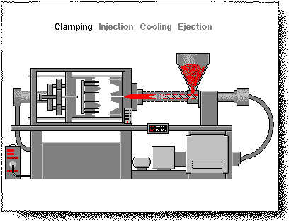

<article class="center w-70 ma4 pb5 mv5-ns">
  <p class="lh-copy f3 i pl2">MOBILITY: DESIGNING AN EMANCIPATORY MEDICAL DEVICE</p>

  <div class="fl w-100 w-50-ns pl2">
    
  </div>
  <div class="fl w-100 w-50-ns mb4 pl2">
    
  </div>

  <p class="lh-copy f3 pl2">
    From 2012 to 2013, three folks and myself attempted to design and engineer a method by which quadraplegic or paraplegic people could gain further mobility in their day-to-day lives. We worked with a local Veterans Association as well as mobility company "Vantage Mobility International" to realize this project.
  </p>
</article>
{% include header.html %}
